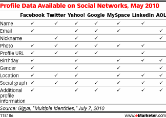

After authenfication, HybridAuth provide the connected user profile's in a rich, simple and standardized structure across all the social APIs.

This can be done by calling back the provider adapter from the main HybridAuth instance. With the returned object [Provider_Adapter], we will have access to: the provider API client, some informations about the connected provider (provider name, configuration, parameters, connection time, etc.), and the user data and profile objects [Hybrid_User] and [Hybrid_User_Profile].
Please keep in mind that not all social APIs will provide all the user data to third-party
The [Hybrid_User_Profile] object will be populated with as much information about the user as HybridAuth was able to pull from the given API or authentication provider.
This snippet show how to use HybridAuth to acces the the current loggedin user data in a simple way:
<?php
# We assume the user is already connected to a provider
$hybridauth = new Hybrid_Auth(); # create the main HybridAuth instance
$provider_adapter = $hybridauth->wakeup(); # callback the provider adapter
# then let inspect Provider Adapter Object
// The ID (name) of the connected provider
echo $provider_adapter->user()->providerId;
// The user's UNIQUE ID on the connected provider
echo $provider_adapter->user()->providerUID ;
// instance of Hybrid_User_Profile describing user Profile Data Members
print_r( $provider_adapter->user()->profile );
// get the user email
echo $provider_adapter->user()->profile->email;
// get the user display name
echo $provider_adapter->user()->profile->dispalyName;
?>
Hybrid_User object represents the current logged in user and contain the user identification, provider identification, connection timestamp and the normalized user profile.
Object Data Members :
| Field Name | Type | Short description |
| providerId | String | The ID or name of the connected provider |
| UID | String | Unique session ID for the connected user, eq to session_id(). |
| providerUID | String | The Unique user's ID on the connected provider. |
| timestamp | integer | The created Hybrid_User instance timestamp |
| profile | Object | An instance of Hybrid_User_Profile describing user Profile Data Membes |
Hybrid_User_Profile object represents the current logged in user profile. list of fields available in the normalized user profile structure used by HybridAuth.
The [Hybrid_User_Profile] object is populated with as much information about the user as HybridAuth was able to pull from the given API or authentication provider.
Object Data Members :
| Field Name | Type | Short description |
| profileURL | String | URL link to profile page on the IDp web site |
| webSiteURL | String | User website, blog, web page, |
| photoURL | String | URL link to user photo or avatar |
| displayName | String | User dispalyName provided by the IDp or a concatenation of first and last name. |
| description | String | A short about_me |
| firstName | String | User's first name |
| lastName | String | User's last name |
| gender | String | User's gender. Values are 'female', 'male' or NULL |
| language | String | User's language |
| age | Integer | User' age, note that we dont calculate it. we return it as is if the IDp provide it |
| birthDay | Integer | The day in the month in which the person was born. |
| birthMonth | Integer | The month in which the person was born. |
| birthYear | Integer | The year in which the person was born. |
| String | User email. Not all of IDp garant access to the user email | |
| phone | String | User's phone number |
| address | String | User's address |
| country | String | User's country |
| region | String | User's state or region |
| city | String | User's city |
| zip | Integer | Postal code or zipcode. |
Home - Overview - User guide - Blog - Contact - Contribute - Licenses - Credits - Similar projects